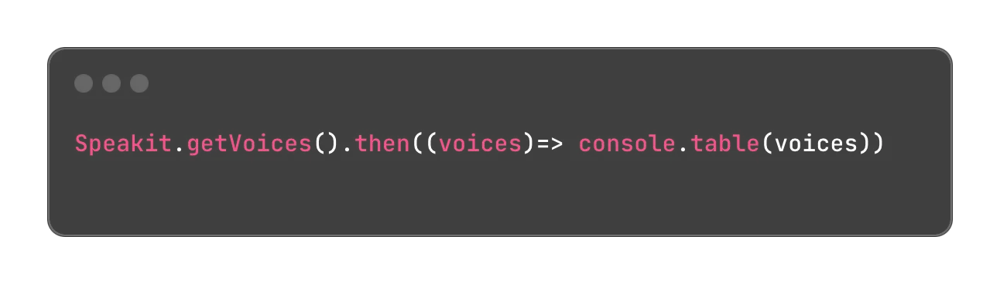
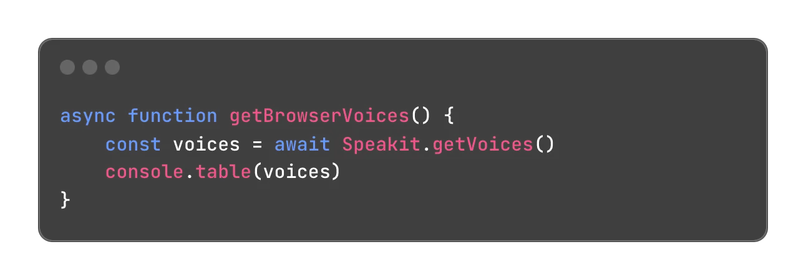
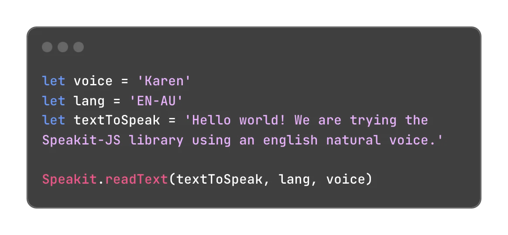
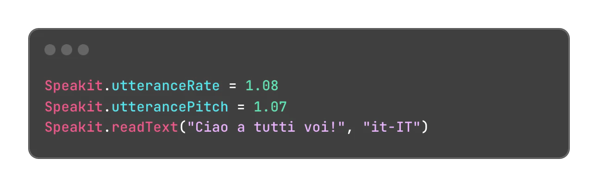

Change the voice tone
The Speech Synthesis API le you pick a language using the language ISO code and also to pick a specific tone for the voice. For example, you can choose between a female, male, or even a child or granma/grandpa voices.
This feature is available as a part of the native API. Using Speakit-JS Library you can easily access to the list of voices available in the web browser's JS Core using .getVoices() method.

This is a method ruled by a Promise. You can use it with .then() Control Method or via Async-Await clausules.

🔔 Every web browser has a limited type of voices available beyond the generic voices. Generic voices used in some samples could sound kind of a robotic voice in some web browsers, always depending the ISO language code picked, but, there are available another type of voices which can sound very much natural, like a human voice.
Watch the following sample of the voices available in Microsoft Edge, Google Chrome, and Safari Browser.
This object array can be different when you check in other browsers. This image was captured in Microsoft Edge Developer Tools.
The .getVoices() method returns an object array with all the available voices in the web browser.
lang: the lang property returns the ISO language code previously mentioned.name: the name property returns the different voice tones that let you customized your WebApp to listen to a specific voice.
Including a customized voice
The .readText() method supports a third parameter which is waiting for a custom voice. Here you can use the name property previously mentioned.

Take a few minutes to check the properties of this array to know what you can show to the user and to configure properly a customized voice tone for your project.
🔔 It is mandatory to check the available voices according the web browser you are coding for, because there are different voices and options. Some of them can work offline but another ones needs to the browser online to work fine.
Advanced features
Speak-it JS Library includes a couple of features for the fine tuning of the voice. Watch here how many options you have available to use.
Voice tone and speed
Speakit-JS Library also includes two properties to adjust the tone and speed of the selected voice.
Voice tone
The .utteranceRate property defines the playback speed of the spoken text using the speech synthesizer (using the .speakText() method). This property determines the the rate at which words will be pronounced. A value of 1.0 represents normal speed, while higher values will increase the speed and lower values will decrease the speed.
After a couple of test during the building of this library, we defined to set the default value in 1.03. We recommend you try a couple of tests accordind to the voice or voices selected to your project before setting another value to this property.
Voice pitch
The .utterancePitch property defines the pitch of the voice used for speech synthesis. This property adjusts the fundamental frequency of the synthesized voice, which may influence the perceived tone of the voice. A value of 1.0 represents normal pitch, and higher or lower values will alter the voice's pitch.

Controlling the playback while speaking
Speakit-JS Library also includes a couple of methods for controlling the spoken text during the playback of it. Here you have the methods and its role:
.pauseSpeaking(): this method let you pauses the text when it is playback..resumeSpeaking(): this method let you continues the playback previously paused..stopSpeaking(): this method cancels the current playback.
And for checking if a text is currently playback or its paused, there you have another two methods available:
.isSpeaking(): Returns true or false depending on whether there is text being played back..isPaused(): Returns true or false depending on whether text playback is paused.
🔔 If you clicked a button tuice for starting to playback a text, the second click will going to a playback queue and will be reproduced after the first one playback finished. This is a behaviour proper of the Native API. We recommend you to control it through your code.